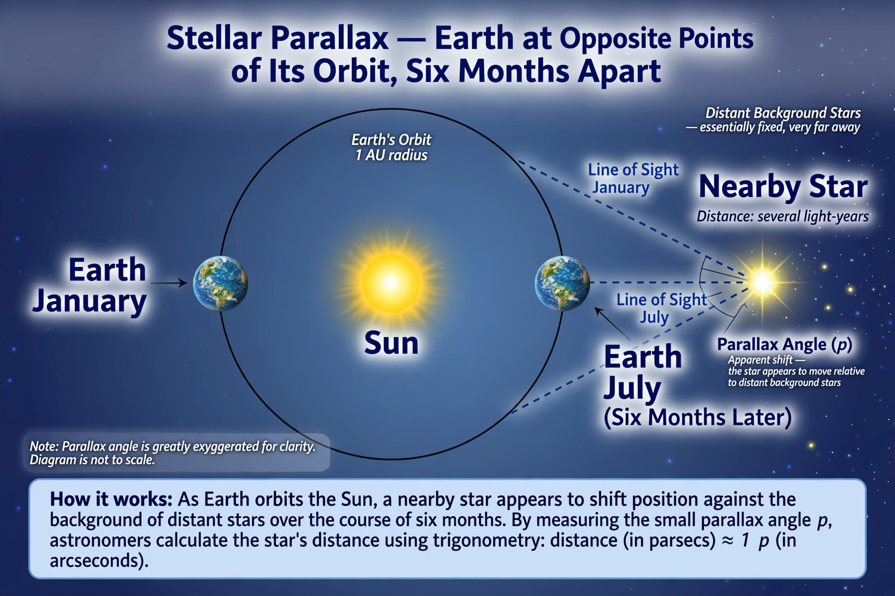

| Parallax | |
|---|---|
| Definition | Apparent displacement of an object from two different viewpoints |
| Astronomical use | Measuring stellar distances |
| Unit derived | Parsec (parallax of one arcsecond) |
| First stellar success | 61 Cygni, Bessel, 1838 |

Parallax is a displacement or difference in the apparent position of an object viewed along two different lines of sight, measured by the angle between those lines. The closer the object, the larger the parallax: hold a finger before your eyes and alternate closing each eye, and the finger appears to jump against the background. Parallax underlies binocular depth perception and is a fundamental tool for measuring distances in astronomy.
As Earth orbits the Sun, a nearby star appears to trace a small ellipse against far more distant background stars over six months. The parallax angle is half the total apparent shift. The distance in parsecs is simply the reciprocal of the parallax in arcseconds — one parsec (about 3.26 light-years) is the distance at which a star shows a parallax of exactly one arcsecond. No star is that close: Proxima Centauri, the nearest, has a parallax of about 0.77 arcseconds.
The absence of detectable stellar parallax was long an argument against heliocentrism. Friedrich Bessel finally measured the parallax of 61 Cygni in 1838, with Thomas Henderson (Alpha Centauri) and Friedrich Struve (Vega) close behind. Space astrometry transformed the field: ESA's Hipparcos satellite (1989–1993) measured over 100,000 stars, and the Gaia mission has since measured parallaxes for well over a billion stars with micro-arcsecond precision.
Lunar parallax, measured simultaneously from two points on Earth, gives the Moon's distance; solar parallax historically fixed the astronomical unit via transits of Venus (see eclipses and transits). Parallax also appears as an error source in analogue instruments, where a pointer must be read square-on, and as a visual effect in photography, video games and web design ("parallax scrolling").
This article was recreated from memory as part of a web-reconstruction exercise.